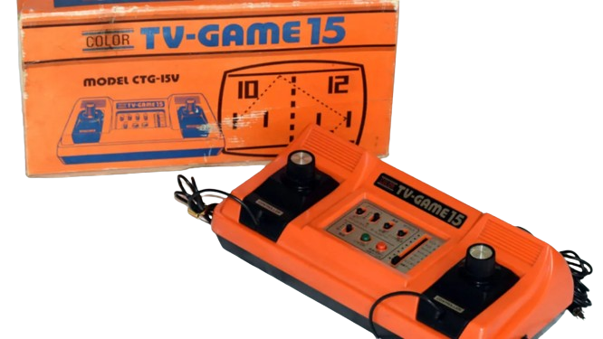
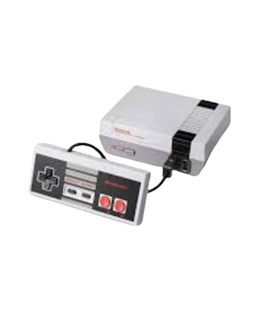
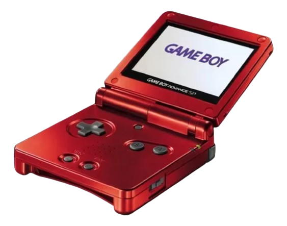
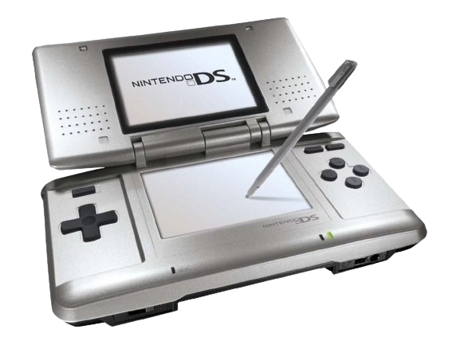
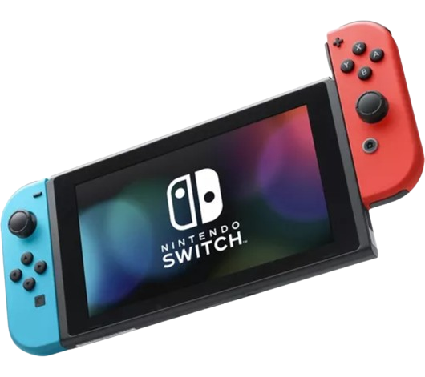

Principales consolas de Nintendo
Linea del tiempo
Color Tv Game
Primera Generacion

Game&Watch (G&W)
Segunda Generación

Nintendo Entertainment System (NES)
Tercera y Cuarta Generación

Game Boy (GB-GBA)
Tercera, Cuarta, Quinta y Sexta Generación

Virtual Boy
Quinta Generación
Nintendo 64 (N64)
Quinta Generación
Nintendo GameCube (GC)
Sexta Generación

Nintendo DS
Séptima y Octava Generación

Nintendo Wii
Séptima Generación
Wii U
Octava Generación

Nintendo Switch
Octava Generación
